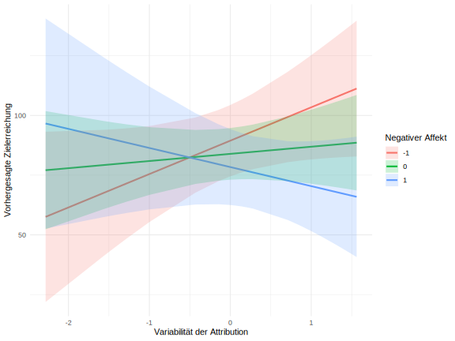
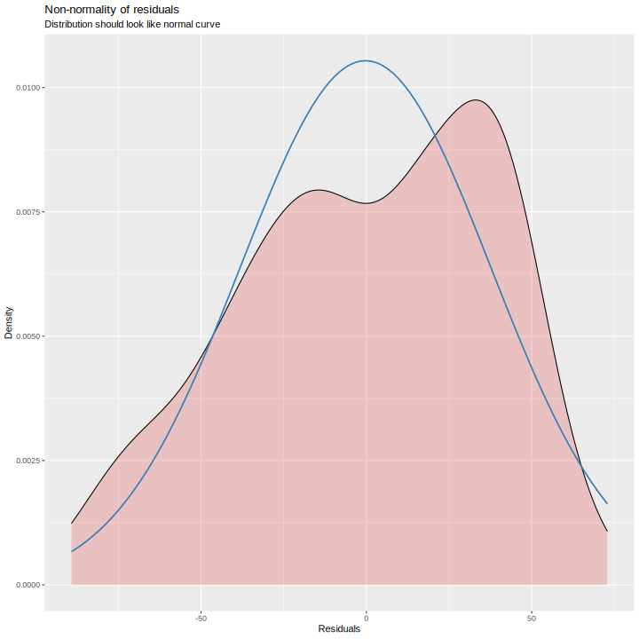
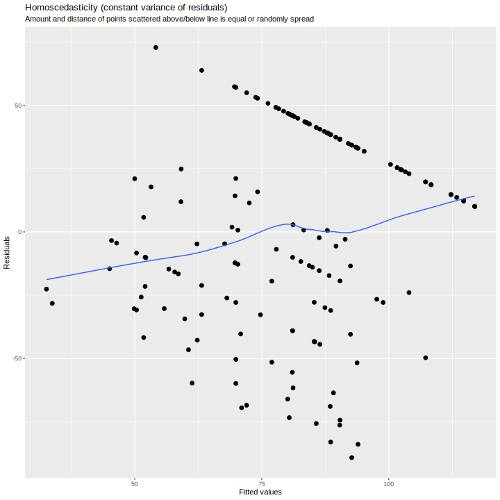

Characteristic | Overall | Divers | Männlich | Weiblich | p-value |
|---|---|---|---|---|---|
Age | 32 (24, 43) | 20 (20, 20) | 36 (24, 59) | 32 (25, 40) | 0.2 |
Sport | >0.9 | ||||
Body & Mind Fitness | 1 (3.8%) | 0 (0%) | 0 (0%) | 1 (5.6%) | |
CrossFit/Funktionale Fitness | 1 (3.8%) | 0 (0%) | 0 (0%) | 1 (5.6%) | |
Kanurennsport | 1 (3.8%) | 0 (0%) | 0 (0%) | 1 (5.6%) | |
Kraftsport | 4 (15%) | 0 (0%) | 2 (29%) | 2 (11%) | |
Laufen | 10 (38%) | 1 (100%) | 3 (43%) | 6 (33%) | |
Parkour | 1 (3.8%) | 0 (0%) | 0 (0%) | 1 (5.6%) | |
Partnerakrobatik | 1 (3.8%) | 0 (0%) | 1 (14%) | 0 (0%) | |
Stand Up Paddeling | 1 (3.8%) | 0 (0%) | 0 (0%) | 1 (5.6%) | |
Trampolinturnen | 1 (3.8%) | 0 (0%) | 0 (0%) | 1 (5.6%) | |
Triathlon | 5 (19%) | 0 (0%) | 1 (14%) | 4 (22%) |
Was uns am Laufen hält: Vorhersagen von Bewegungsadhärenz durch Affekt und Attributionsstile
Enno Winkler
Lehrgebiet Gesundheitspsychologie, Externer Betreuer Dr. Sascha Leisterer (Humboldt-Universität zu Berlin), Fernuniversität Hagen
Author Note
Enno Winkler  https://orcid.org/0000-0000-0000-0001
https://orcid.org/0000-0000-0000-0001
Zusammenfassung
This document is a template.
Schlüsselwörter: keyword1, keyword2, keyword3
Was uns am Laufen hält: Vorhersagen von Bewegungsadhärenz durch Affekt und Attributionsstile
Die Empfehlungen zu regelmäßiger physischer Aktivität (PA, Caspersen et al., 1985) der WHO (World Health Organization, 2010) werden von nur etwa 26% der erwachsenen Bevölkerung in Deutschland in Bezug auf Muskel- und Ausdauertraining erreicht (Robert Koch-Institut, 2022). Das hat großen gesundheitlichen und finanziellen Schaden zur Folge. Ding et al. (2016) gingen der Frage nach, welche Kosten sich jährlich und weltweit durch Produktivitätsausfälle und Behandlungskosten als Folge von Inaktivität ergeben. Als Endergebnis nennen die Autor:innen, dass der Gesamtbetrag einer konservativen Schätzung nach zwischen 19 und 182 Milliarden, einer weniger konservativen Schätzung nach allerdings zwischen 47 und 339 Milliarden Dollar liegt. Dabei sind die gesundheitlichen Vorteile von PA ermutigend. Menschen, die ein relativ hohes Niveau an PA berichten, zeigen eine deutlich reduzierte Mortalität (Warburton, 2006). Auch Studien mit direkten Messmethoden kommen zu diesem Ergebnis. So fanden Myers et al. (2004) in einer Analyse der Trainingskapazität von Männern im fortgeschrittenen Erwachsenenalter eine um etwa 20% reduzierte Mortalität pro Zuwachs des Aktivitätsniveaus um ein metabolisches Äquivalent. Eine Erklärung dafür ist, dass aktivere Individuen seltener an chronischen Krankheiten erkranken. Lee et al. (2012) berichten in einer Meta-Analyse, dass die Krankheitslast von Herz-Kreislaufkrankheiten, Krebs und Diabetes bei Inaktivität um 6-10% erhöht ist und dass damit eine um mehr als ein halbes Jahr verkürzte durchschnittliche Lebenserwartung einhergeht. Körperliche Aktivität bringt auch Vorteile für die psychische Gesundheit. Das geschieht sowohl durch die Veränderung physiologischer als auch psychologischer Zustände im Körper (Mikkelsen et al., 2017).
Die Wirkung von PA gegen Depression ist eine vieldiskutierte Forschungsfrage, die noch nicht abschließend geklärt ist. Ledochowski et al. (2016) kommen in einer systematischen Literaturrecherche zu dem Ergebnis, dass depressive Symptomatik sich durch moderate, zum Trainingszustand des:der Patientin passende PA reduzieren lässt, und dass sich dadurch affektive Zustände verbessern. Die Autor:innen sprechen die Empfehlung aus, Bewegung als Teil der Behandlung von Depression zu nutzen. In einer systematischen Literaturrecherche der Cochrane-Datenbank (Cooney & Mead, 2013) äußern sich die Autor:innen eher zurückhaltend. Die Effekte für Depression sind allenfalls moderat, und bei alleinigem Einbezug von rigoros kontrollierten Studien entziehen sich die Effekte statistischer Signifikanz. Es gibt außerdem Befunde, die zeigen, dass PA zwar effektiv in der Behandlung, nicht aber in der Prävention von Depression (Carter et al., 2016; Paluska & Schwenk, 2000) ist. Die Forschungsgruppe um Ioannis D. Morres berichtet ermutigendere Ergebnisse. In einer Meta-Analyse zu aerobischer Bewegung finden Morres et al. (2018) mittlere bis große Effekte in der Behandlung von Depression. Hier zeigen sich Hinweise, dass z.B. eine Berücksichtigung der Vorlieben für Sport wichtig ist. Die Art der Bewegungs-Intervention spielt eine Rolle und bedarf weiterer Forschung.
Der Fokus von Studien zur Bewegungsförderung lag bisher auf Interventionen, die inaktive Personen dazu ermutigen, sich mehr zu bewegen und auf der Adhärenz zu solchen Interventionen (siehe z.B. Gillison et al., 2009). Weniger Studien befassten sich mit der Frage, welche Faktoren die Aufrechterhaltung einer Bewegungsgewohnheit von Personen, die bereits gewohnheitsmäßig aktiv sind, beeinflussen (z.B. Stetson et al., 2005). Das Rückfallpräventionsmodell (Relapse Prevention Model, Marlatt and George (1984)) könnte einen geeigneten Rahmen zur Untersuchung dieser Fragestellung darstellen.
Theorie
Physische Aktivität und Bewegung
Physische Aktivität (physical activity [PA]), auch körperliche Aktivität (z.B. Krug et al., 2013) wird in vielen Definitionen als mechanistisch verstanden. So definiert Caspersen et al. (1985) physische Aktivität als jedwede Aktivität der Skelettmuskeln, die einen Energieumsatz zur Folge hat. Andere Autor:innen unterscheiden sich in der Definition von physischer Aktivät in den Bedeutungsnuancen. So spezifizieren beispielsweise Hollmann and Strüder (2009), dass die Aktivität in einer Steigerung des Energieumsatzes resultieren muss, um als PA zu gelten. Zweifelsohne sind klare und einfache Definitionen essenziell für den wissenschaftlichen Zugang zu diesem Phänomen. Piggin (2020) argumentiert jedoch, dass diese reduktionistische Auffassung von PA wird dem komplexen Erleben und Verhalten im Zusammenhang mit physicher Aktivität nicht gerecht wird und steht einer ganzheitlichen Betrachtung im Wege steht. Das ist auch im Einklang mit dem Biopsychosozialen Ansatz (Engel, 1977), der auf dem biomedizinischen Ansatz aufbaut und ihn erweitert. Im Gegensatz zum krankheits- und defizitorientierten Biomedizinischen Ansatz berücksichtigt der Biopsychosoziale Ansatz auch psychische und soziale Faktoren, zusätzliche zu den biologischen Faktoren. Um den Zusammenhang psychischer Phänomene (Affekt, Attribution) mit PA in dem Kontext der Gesundheitsförderung zu diskutieren, übernehme ich daher die Definition von Piggin (2020): “Physical activity involves people moving, acting and performing within culturally specific spaces and contexts, and influenced by a unique array of interests, emotions, ideas, instructions and relationships.” (S. 5).
Bewegungsadhärenz (exercise adherence, z.B. (Mcauley et al., 1994)) beinhaltet das Einhalten von selbst-oder fremdgesetzten Zielen im Zusammenhang mit PA (Buckworth & Dishman, 2007) und hat in der Regel das Ziel der Bewegungsförderung in einem gesundheitlichen Kontext (Ainsworth & Der Ananian, 2020).
- Empfohlene PA
Messung von Physischer Aktivität
Es gibt drei grobe Kategorien, in die Messmethoden für physische Aktivität fallen, und zwar direkte, indirekte und Fragebogen.
Die Messung per Fragebogen unterliegt typischen Problemen des Selbstberichts. Da beim Beantworten an Vergangenes erinnert wird, und bei der Konstruktion der Erinnerung abweichen auftreten können, ergibt sich das Problem der Retrospektivität. Außerdem kann sich das Antwortverhalten von Versuchspersonen verändern, wenn sie sich Bewusst sind, dass ihre Antworten analysiert werden, also Reaktivität herrscht. Zum Beispiel könnten Personen so antworten, wie es sozial erwünscht ist. Wenn eine Versuchsperson sich bewusst oder unbewusst als besonders sportliche Person darstellen möchte, könnte sie eine erhöhte Trainingsintensität berichten. Zur Messung physischer Aktivität gibt es Fragebögen, die das durchschnittliche Niveau physischer Aktivität im Alltag zu erfassen suchen, und Fragebögen, die sich spezifisch auf einzelne Trainingseinheiten beziehen.
Direkte Messmethoden beziehen sich auf die Beobachtung von physischer Aktivität oder Messmethoden von physischen Parametern, die direkt mit physischer Aktivität zusammenhängen. Dazu zählen Herzschlag oder der Laktat-Level im Blut, oder die strukturierte Beobachtung (SOCARP), wozu auch das Stoppen der Zeit bei dem Rundenlauf (e.g. Cooper-Test) beinahltet.
Affekt
Affekt wird auf zwei Dimensionen konzipiert, und zwar Valenz und Aktivierung. Positiver affekt fühlt sich gut an und zieht uns dazu
Aktivierender Affekt geht mit erhöhtem Puls, Aufgeregtheit, gehobener Stimmung etc. einher. Niedrige Ausprägungen auf dieser Dimension des Affekts gehen mit Entspannung oder Rückzug einher. Im Circumplex Model of Affect [LIT] wird diese Konzeption vereint.
Attribution
Menschen ziehen für ihre Erfolge und Misserfolge unterschiedliche Erklärungen heran. Diese Erklärungen werden als Attribution bezeichnet, und unterscheiden sich auf den Dimensionen des Lokus, der Variabilität und der Globalität. Das Nichteinhalten eines Trainingsregimens könnte beispielsweise auf externe Faktoren oder interne, in der Person befindliche Faktoren attribuiert werden (Lokus). Ebenso könnte die variable Erklärung des “einmaligen Ausrutschers” oder die stabile Erklärung der “Fehlenden Sportlichkeit” herangezogen werden. Zuletzt könnten Personen sich den Misserfolg durch Faktoren erklären, die sich nur auf diese Situation beziehen (“ich kann mich zwar nicht an meine Bewegungsziele halten, aber meine Studienziele schaffe ich”), oder auf andere Situationen generalisieren (“Ich bin generell ein wenig Zielstrebiger Mensch”).
Das Rückfallmodell
Das Rückfallmodell von Marlatt and George (1984) beleuchtet die Mechanismen der Aufrechterhaltung von Gesundheitsverhalten. Es basiert auf der Theorie des Sozialen Lernens (Bandura, 1977) und beinhaltet sowohl kognitive als auch behaviorale Komponenten. Marlatt and George (1984) erklären, dass in diesem Modell die Initiierung von Gesundheitsverhalten und die Aufrechterhaltung dessen als zwei komplett verschiedene Prozesse verstanden werden. Somit ist also in diesem theoretischen Rahmen irrelevant, wie ein Individuum ein Gesundheitsverhalten, wie z.B. das Nichtrauchen oder regelmäßige PA, aufgenommen hat. Es wird allein die Frage betrachtet, wie Individuen auf Ausfälle bzw. Rückfälle vorbereitet werden können. Rückfälle werden hier nicht als Versagen behandelt, sondern als Teil des Prozesses zu einem stabilen Gesundheitsverhalten. Das Modell ist ist auch auf den Kontext von Sport und Bewegung anwendbar (z.B. Marcus et al., 1997). Es wurde in Bezug auf Populationen mit bewegungsarmer Lebensweise (Marcus & Stanton, 1993; Martin et al., 1984); und bereits aktive Populationen (Stetson et al., 2005) angewendet.
Zentrale Konstrukte in diesem Modell sind nach Marlatt and George (1984) Hochrisikosituationen (high risk situations), wahrgenommene Kontrolle (perceived control), Coping-Reaktion (coping response), Positive Erwartungen (positive outcome expectancies), und der Verstoß gegen Abstinenz (abstinence violation effect).
Hochrisikosituationen sind Situationen, in denen die Wahrscheinlichkeit eines Rückfalls erhöht ist. Die drei im Sample von Marlatt and George (1984) am häufigsten berichteten Situationen sind negative emotionale Zustände (55%), sozialer Druck (20%),und zwischenmenschliche Konflikte (16%). Im Kontext von PA könnte ein solcher Zustand von negativen Gefühlen nach dem Sport herrühren.
Individuen erleben wahrgenommene Kontrolle, wenn sie erfolgreich Abstinenz ausüben oder, im Kontext von PA also von sedentärem Verhalten absehen. Wahrgenommene Kontrolle steigt, je länger die Abstinenz andauert und sinkt in einer Hochrisikosituation.
Coping-Reaktionen verbessern die wahrgenommene Kontrolle in einer Hochrisikosituation allerdings erheblich. Hierbei handelt es sich um ein Repertoire von Verhaltensweisen, um mit Hochrisikosituationen umzugehen. Als Beispiel in Bezug auf Sport und Bewegung sei die Angewohnheit genannt, trotz schlechten Wetters mit entsprechender Kleidung laufen zu gehen.
Positive Erwartungen stammen von der erwarteten sofortigen Belohnung durch das Unterlassen von Gesundheitsverhalten, wie z.B. wenn das Unterlassen einer Lauf-Einheit kurzfristig belohnend erscheint.
Verstöße gegen die Abstinenz werden von persönlicher Attribution begleitet. Das Rückfallmodell postuliert, dass eine internal-variable Attribution dienlich ist. Nach einem Rückfall zu sedentärem Verhalten wäre es demnach dienlich, die Ursache bei sich selbst zu sehen und als veränderbar zu betrachten.
Kritik am Rückfallmodell Innerhalb dieses Modells ist die wichtige Rolle der Selbstwirksamkeit bereits gut untersucht, in Bezug auf andere Variablen ist die Studienlage allerdings noch dünn (Amireault et al., 2013).
Hypothesen und Forschungsfrage
Es ergibt sich die Forschungsfrage, inwiefern Affekt oder der Attributionsstil den Trainingsausfall bzw. die wahrgenommene Zielerreichung vorhersagen. Hierbei bezieht sich Affekt auf den State
Wenn negatives Gefühlserleben und eine undienliche Attribution nach einem Rückfall häufiger zum schlussenlichen Unterlassen des Gesundheitsverhaltens fühlen, dann sollten ein tendenziell negatives Affekterleben und ein external - stabiler Attributionsstil weniger Trainingseinheiten und eine schwächer ausgeprägte Erreichung des gesetzen Ziels erreichen.
H1: Ein internal - variabler Attributionsstil sagt weniger Trainingsausfälle (H1.1), sowie eine geringere wahrgenommene Zielerreichung vorher (H1.2). H2: Ein negativeres Affekterleben sagt mehr Trainingsausfälle (H2.1) und eine geringere wahrgenommene Zielerreichung vorher (H2.2).
Da die in den präregistrierten Hypothesen einbezogenen Variablen keine Aussagekräftige Datenstruktur hergaben, wurde explorativ die rate of perceived exhaustion und der positive Affekt zur Modellerstellung hinzugenommen.
Methode
Instrumente
Da es sich um ein Sample mit internationalen studierenden handelte, wurde bei allen Fragebögen die englische Version verwendet.
Demografische Variablen: In der Baseline-Erhebung wurden das Alter, das Geschlecht, die Sportart und das Sportziel (z.B. “Marathon”) abgefragt.
Attributionsstil: Zur Erfassung des Attributionsstils wurde das Attribution Style Questionnaire (Peterson et al., 1982) eingesetzt. Den Versuchspersonen wurden 16 verschiedene Szenarien präsentiert, die einen Erfolg oder Misserfolg schilderten, z.B. “You meet a friend who compliments you on your appearance.” Es wurde dann die Ursache für den Erfolg oder Misserfolg in einer offenen Frage abgefragt, damit die Teilnehmenden sich beim Antworten auf die darauffolgenden Fragen nur auf diese eine Ursache beziehen. Danach wurden auf einem semantischen Differenzial mit Werten von 1-7, z.B. mit den Polen “Totally due to other people or circumstances” und “totally due to me” die drei Dimensionen Internalität, Stabilität und Globalität erfasst. Der Mittelwert aller 16 Situationen wurde für jede Dimension gebildet. Die Reliablität und Validität der Daten aus diesem Fragebogen wird u.a. von (Corr & Gray, 1996) unterstützt.
Positive and Negative Affect Scale (PANAS): Die Positive and Negative Affect Scale (Panas, (Watson et al., 1988)) erfasst auf einer Skala von 1 (“not at all”) bis 5 (“extremely”) den positiven und negativen Affekt, mit jeweils 10 Items für positiven und 10 Items für negativen Affekt. Jedes Item ist nur ein einzelnes Wort, z.B. “interested” für positiven Affekt, oder “distressed” für negativen Affekt. Da es keine negativ gepolten Items gibt, werden die einzelnen Werte zu einem Gesamtwert für positiven und negativen Affekt gemittelt. Neben der Originalstudie von Watson et al. (1988) wurde die die Skala auch in neueren Studien als reliabel und valide erklärt (Crawford & Henry, 2004).
Trainingsbezogene Variablen: Im Baseline-Fragebogen wruden die wöchentliche Trainingszeit in Stunden und die Lauf-Kilometerzahl abgefragt. Zu jeder Trainingseinheit wurden ebenso die Trainingszeit und Kilometerzahl, bezogen auf das einzelne Training, abgefragt. Dazu wurden die Versuchspersonen gefragt, wie sehr die Intention, das Trainingsziel zu erreichen, ausgeprägt war (Commitment, visuelle Analogskala von 1-100), und zu wieviel Prozent sie ihr Trainingsziel erreicht war (Goal Attainment)
Weitere Instrumente: In diesem Forschungsprojekt wurden außerdem authentischer und überheblicher Stolz (authentic and hubristic pride, Tracy and Robins (2007)), und implizite Motive (Sokolowski et al., 2000; Winter, 1994) erfasst.
Session RPE: Die Session Rate of Perceived Exhaustion (Sessionn-RPE, Foster et al., 2001) misst die wahrgenommene körperliche Belastung einer Trainingseinheit auf einer Skala von 0-10. Das Item lautet “How was your workout?” und die Skala soll etwa 30 Minuten nach Beenden des Trainings ausgefüllt werden. Auf den Stufen ß-5 ist jeder Wert beschriftet (0 = Rest, 1 = Very, Very Easy; 2 = Easy; 3 = Moderate; 4 = Somewhat hard; 5 = Hard). Auf den Stufen 6-10 sind nur Stufe 7 (Very Hard) und der Maximalwert (10 = Maximum) beschriftet. Diese Methode der Messung der Trainingsintensität wurde vielfach validiert und die Reliabilität der Skala ist gut (Foster et al., 2021). Die Übereinstimmung mit Messungen der Herzfrequenz bei vielen verschiedenen Arten von Sport ist hoch (Day et al., 2004; Foster et al., 2001). In dieser Arbeit werden diese Daten nicht berücksichtigt.
Stichprobe:
Die Teilnehmenden waren erwachsene Freizeitsportler:innen mit einem bestimmten Trainingsziel.
Um ein aussagekräftiges Modell zu bekommen, wird eine Korrelation von 0,5 empfohlen [LIT]. Basierend auf einer Poweranalyse mit 1 – β = 0.95, α = 0.05, und r = 0.5 ergab sich eine ideale Teilnehmerzahl von 38. Die Frage der Poweranalyse für Mehrebenenanalysen ist allerdings komplex (Hox et al., 2017). Der Versuch, post-hoc Power des bestimmten Modells durch Simulation mit dem Paket simr (Green & MacLeod, 2016) zu bestimmen, scheiterte, was teils auf die kleine Stichprobe, teils auf die Datenstruktur zurückgeführt werden kann. N = 48 Fälle ergaben sich in dem Rohdatensatz. n = 9 wurden von der Analyse und weiteren Befragungen ausgeschlossen, weil sie angaben, nicht an einem systematischen Trainings- oder Bewegungsprogramm teilzunehmen. Aufgrund von mehr als 50 fehlenden Datenpunkten wurden n = 12 Teilnehmende ausgeschlossen. Die deskriptiven Statistiken zu den demografischen Daten sind in Tabelle 1.
Die Teilnehmenden waren durchschnittlich 34.52 Jahre alt (SD = 13.82). Das Alter reichte von 19 bis64.
Durchführung:
Prozedur
Diese Studie wurde von der Ethikkommission der Uni Leipzig genehmigt (Fallnr. 2023.05.03 _cb_196).
Die Teilnehmenden wurden über Inserate in sozialen Medien und persönliche Kontakte rekrutiert, es handelt sich also um eine Gelegenheitsstichprobe. Es gab zwei Inklusionskriterien: Die Teilnehmenden mussten erwachsen sein und ein konkretes Trainingsziel verfolgen. Ebenso wurde darauf hingewiesen, dass bei Krankheiten oder relevanten Verletzungen eine Studienteilnahme nicht möglich ist.
Die Freizeitsportler:innen berichteten vor der Studie in einer separaten Sitzung ihr generelles Affekterleben innerhalb der letzten zehn Tage mit der Positive and Negative Affect-Scale (PANAS) von Watson et al. (1988). Der Prä-Test enthielt außerdem die Skala von Peterson et al. (1982) zum Attributionsstil und die Items zu demografischen Daten.
Darauf folgte die Trainingsphase, in der die Trainierenden über einen Zeitraum von maximal zwei Monaten sechs Trainingseinheiten dokumentieren sollten. Dazu wurden sie per E-Mail benachrichtigt und sie wurden gebeten, nach der Trainingseinheit einen Fragebogen auszufüllen. In den Befragungen wurden jeweils der positive und negative Affekt, Session RPE und die trainingsbezogenen Variablen abgefragt.
Die Daten der einzelnen Versuchspersonen wurden mittels eines Pseudonyms zugeordnet, das keinen Rückschluss auf Einzelpersonen ermöglichte. Nach der Datenerhebung wurden der Datensatz komplett anonymisiert. Die Versuchspersonen wurden schriftlich debrieft.
Statistische Analyse
Datenbereinigung und Transformation
Diese Arbeit wurde mit R (Version 4.4.2 ) und Quarto (Version 1.6.32) erstellt. Die reproduzierbare Version dieses Artikels ist auf GitHub unter https://github.com/Enno-W/BAEW verfügbar.
Versuchspersonen, die angaben, kein konkretes Trainingsziel zu verfolgen oder mehr als 50 fehlende Werte hatten, wurden von der weiteren Analyse ausgeschlossen. Variablen, die im Rahmend des Forschungsprojekts erfasst wurden, aber in dieser Arbeit nicht berücksichtigt werden, wurden eliminiert. Für Werte, bei denen die Versuchspersonen einen Bereich (z.B. 10-15 km) angegeben hatten, wurde der Durchschnitt der beiden Werte gebildet. Da die Skalen von Affekt und Attribution keine gegensätzlich gepolten Items beinhalten, wurde keine Umpolung vorgenommen. Angaben zur Sportart mit dem Wortbestandteil “lauf” wurden zu “Laufen”, und mit “kraft” zu “Kraftsport” zusammengefasst.
In dem Datensatz befanden sich immer noch 404 fehlende Werte, die per multipler Imputation per predictive mean matching mit 5 Iterationen geschätzt wurden. Bei diesem Verfahren werden in mehreren Durchläufen bzw. Iterationen plausible Werte anhand der Verteilungen und Beziehungen der Variablen untereinander geschätzt (Li et al., 2015).
Die Daten bestanden aus einem Baseline-Test und Angaben aus einem Fragebogen zu sechs darauffolgenden Trainingseinheiten. Diese wöchentlichen Angaben wurden zu Mittelwerten zusammengefasst. Außerdem wurde ausgezählt, wie viele Trainingseinheiten eine Person ausgefüllt hatte. Die Normalverteilung bei wurde bei sämtlichen Variablen überprüft. Für die Berechnung der hierarchischen linearen Modelle wurden die Daten in ein Langformat transformiert, und zwar so, dass jeder Messzeitpunkt in einer Zeile aufgeführt war. So entstanden für jede Versuchsperson sechs Zeilen für die 6 Messzeitpunkte. Die Werte, die nur zu einem Messzeitpunkt erhoben wurden, wie etwa Attributionsstil oder Alter, wiederholten sich in jeder dieser sechs Zeilen.
Statistische Tests
In der Präregistrierung wurde als Haupttest eine Mehrebenenanalyse, auch bekannt als Hierarchisches Lineares Modell spezifiziert. Die Voraussage der Trainingsausfälle durch ein Mehrebeneenmodell scheiterte an einer geringen Variabilität dieser Zielvariable, denn die meisten Versuchspersonen hatten alle Einheiten abgeschlossen. Das hierarchische lineare Modell somit nicht konvergieren konnte. Als Alternative wurden Hypothesen 1.1 und 2.1 explorativ mit einem verallgemeinerten Linearen Modell (GLMM) getestet. Für Hypothesen 1.2 und 2.2 konnte ein hierarchisches lineares Modell berechnet werden.
Hierarchische Lineare Modelle Hierarchische Lineare Modelle stellen komplexe statistische Verfahren dar, die besonders gut für längsschnittliche Daten geeignet sind (Nezlek et al., 2006). Der Vorteil solcher Modelle ist, dass “genestete” Daten in die Analyse mit einbezogen werden können. Im vorliegenden Datensatz sind die Daten eines Individuums über die sechs Messzeitpunkte hinweg nicht unabhängig voneinander, sondern die Daten sind im Individuum “genestet”. Schließlich reagiert jede Versuchsperson unterschiedlich auf die Anforderungen dieser Studie. Bei manchen Versuchspersonen könnte die wahrgenommene Zielerreichung über die Zeit hinweg steigen, bei anderen wiederum könnte sie weniger stark steigen oder sogar sinken. Das Interzept, also der Startpunkt der Vorhersagegeraden eines jeden Individuums, könnte sich ebenso unterscheiden, schließlich starten nicht alle mit genau dem gleichen Ausmaß an wahrgenommener Zielerreichung. Im vorliegenden Modell wird dem Rechnung getragen, indem die Veränderung über die Zeit je nach Person (ID) als random effect in das Modell eingeht. Dabei wird im Modell zugellassen, dass sowohl das Interzept als auch die Steigung (“slope”) frei variieren. Daneben gibt es aber auch Effekte, von denen erwartet wird, dass sie alle Versuchspersonen in gleicher Weise beeinflussen, wenn auch unterschiedlich stark. In diesem Modell sind das der negative Affekt nach der Trainingseinheit sowie als Trait, beziehungsweise der Lokus und die Variabilität des Attributionsstils.
Bei hierarchischen linearen Modellen ergibt sich die Frage der Zentrierung. Dafür wurden die wiederholten Angaben zu negativem Affekt zentriert. Die Residuen der aufgestellten Modelle erfüllten allerdings die Voraussetzung der Homoskedastizität und Normalverteilung nicht. Daher wurde explorativ …
Um die Intraklassen-Korrelation zu berechnen, wurde zunächst ein Nullmodell berechnet. Bei einem Nullmodell handelt es sich um die einfachste mögliche Form eines hierarchischen linearen Modells.
Ergebnisse
Deskriptive Statistiken
Tabelle 1 zeigt einen Überblick über deskriptive Statistiken aller relevanten Variablen. Das Alter weist eine leichte Rechtsschiefe auf, es gab also viele jüngere und wenig ältere Teilnehmende.
Die Daten zum Attribution (Locus und Variabilität) folgen einer Normalverteilung, aber alle Werte fielen relativ hoch aus. Sie reichten von 4.3 bis 6.9 für den Lokus und von 4.3 bis 7 für die Variabilität.
Für die Variablen, die nach jeder Trainingseinheit erfasst wurden, Durchschnittswerte gebildet. Die Anzahl der abgeschlossenen Trainingseinheiten, von denen es insgesamt sechs in der Studie gab, weist eine linksschiefe Verteilung auf, da 16 Personen alle Einheiten beendet haben. Ein ähnliches Muster mit vielen hohen Werten weist die durchschnittliche wahrgenommene Zielerreichung auf. 14 Personen hatten Werte größer als neunzig, und sämtliche Durchschnittswerte der Ziellerreichung reichten von 62.5 bis 100. Die Variablen der durchschnittlich gelaufenen Kilometer und Minuten pro Einheit wies viele Werte am unteren Ende der Verteilung auf und einige extreme Werte am oberen Ende. Von allen Variablen, die auf zu den Trainingseinheiten erhoben wurden, war nur die durchschnittliche wahrgenommene Trainingsintensität normalverteilt. Der negative Affekt nach jeder Trainingseinheit hatte einen Maximalwert von 3 und eine hohe Konzentration von Werten am unteren Ende der Verteilung.
Die Baseline-Werte waren allesamt rechtsschief und nicht normalverteilt. Die wöchentlich gelaufenen Kilometer wiesen zwei Ausreißer mit extremen Werten von mehr als 200km pro Woche auf. Diese Werte waren nicht plausibel, da sie, mit der wöchentlichen Laufzeit verrechnet, eine Durchschnittsgeschwindigkeit von jeweils 136.5 und 21 Kilometern pro Stunde suggerierten. Da aber diese Baseline-Werte aber nicht in die statistischen Analysen einbezogen wurden, wurden die Daten dieser Versuchspersonen beibehalten.
Tabelle 1
Deskriptive Statistiken
Variable | Median | Mittelwert | 95% KI | SD | Schiefe | Exzess | p-Wert |
|---|---|---|---|---|---|---|---|
Alter | 31.00 | 34.52 | 5.47 | 13.82 | 0.74 | -0.76 | 0.007 |
Locus | 5.80 | 5.64 | 0.27 | 0.69 | -0.28 | -0.79 | 0.604 |
Variabilität | 5.90 | 5.90 | 0.28 | 0.71 | -0.34 | -0.82 | 0.381 |
n (Trainingseinheiten) | 6.00 | 4.78 | 0.69 | 1.74 | -0.90 | -0.95 | < .001 |
M (Ziellerreichung) | 90.00 | 86.97 | 4.08 | 10.32 | -0.78 | -0.27 | 0.037 |
M (Negativer Affekt) | 1.23 | 1.31 | 0.14 | 0.36 | 2.09 | 4.91 | < .001 |
Baseline negativer Affekt | 1.27 | 1.35 | 0.16 | 0.40 | 0.70 | -0.82 | 0.006 |
Hinweis. Das Konfidenzintervall ist als Abstand vom Mittelwert zum unteren bzw. oberen Konfidenzintervall notiert.
Abbildung 1 zeigt eine Übersicht der Variablen, die zur Überprüfung der Hypothesen herangezogen wurden, in Violinen-Plots.
Abbildung 1
Violinen-Diagramme aller Variablen, die

Hinweis. This is the note below the figure.
Korrelationen
Laut Cohen (2013) kann der Korrelationskoeffizient in den Sozialwissenschaften ab r = .1 als schwach, ab r = .3 als mittelmäßig und von r = .5 bis r = 1 als stark interpretiert werden. Die Korrelationen für relevante Variablen sind in Tabelle 2 dargestellt. In Bezug auf die Hypothesen ist lediglich einer der Korrelationswerte bedeutsam. Zwischen dem negativen Affekt und der wahrgenommen Zielerreichung zeigte sich eine signifikante, mittelmäßig stark ausgeprägte Korrelation. Je mehr negativen Affekt Versuchspersonen also nach einer Trainingseinheit im Durchschnitt berichteten, desto schlechter erlebten sie ihre Zielerreichung. Negativer Affekt nach der Trainingseinheit war ebenso mit einer höheren RPE im Durchschnitt assoziiert.
Die Trainingsbezogen Variablen brachten mehrere starke, signifikante Korrelationen hervor. Die Baseline-Werte für Trainingszeit und Distanz waren sowohl mit der gemittelten Trainingszeit als auch der Distanz aus den einzelnen Trainingseinheiten signifikant korreliert. Auch die anderen Baseline-Werte korrelierten mit den Durchschnittswerten aus den einzelnen Trainingseinheiten.
Sowohl als zwischen Baseline-RPE und Baseline negativem Affekt als auch der durchschnittlichen Session-RPE und negativem Affekt ergaben sich positive Korrelationen. Je höher der negative Affekt ausgeprägt war, desto anstrengender erlebten Personen ihre Trainingseinheit.
Tabelle 2
Korrelationstabelle der gemittelten durchschnittlichen Werte aus den Werten der einzelnen Sessions
Correlations | |||||||
|---|---|---|---|---|---|---|---|
Measure | 1 | 2 | 3 | 4 | 5 | 6 | 7 |
1. Alter | |||||||
2. Locus | 0.09 | ||||||
3. Variabilität | -0.19 | 0.23 | |||||
4. n (Trainingseinheiten) | 0.14 | -0.13 | 0 | ||||
5. M (Ziellerreichung) | -0.17 | 0.03 | 0.13 | -0.01 | |||
6. M (Negativer Affekt) | -0.2 | -0.28 | 0.12 | 0.3 | -0.41* | ||
7. Negativer Affekt bei Baseline Messung | -0.27 | -0.37 | 0.08 | 0.18 | -0.16 | 0.76** | |
Hinweis. *p < 0.05; **p < 0.01
Regressionsmodelle
Es wurde jeweils ein Modell zur Vorhersage der Trainingsausfälle sowie der wahrgenommenen Zielerreichung gebildet. Das Regressionsmodell zur Vorhersage der abgeschlossenen Trainingseinheiten sind in Tabelle 6 zu sehen, und die Hierarchischen Regressionsmodelle zur Vorhersage von wahrgenommener Zielerreichung sind in ?@tbl-glmmtable abgebildet.
Vorhersagen von Trainingsausfällen
Teilnehmende wurden in der Studie dazu aufgefordert, sechs Trainingseinheiten zu dokumentieren und die Fragebögen dazu auszufüllen. Es wurde ausgezählt, zu wie vielen Trainingseinheiten Daten vorlagen und diese Anzahl als Dummy-Variable eingetragen. Die resultierende Variable, also die Anzahl der Trainingsausfälle, war linksschief (Skew = -0.89557), und hatte eine geringe Varianz: 16 Teilnehmende von 27 (59.2592593 %) hatten alle sechs Trainingseinheiten abgeschlossen, daher konnte kein Hierarchisches Lineares Modell berechnet werden: Die Konvergenz des Modells scheiterte. Die Alternative eines generalisierten linearen gemischten Modell (GLMM) mit Poisson-Verteilung lieferte ein passendes Modell. Wie in ?@tbl-glmmtable gezeigt, deckte das Modell keine signifikanten Prädiktoren auf. Ach nach Hinzufügen der rate of perceived exhaustion als Prädiktor gab es keine signifikanten Prädiktoren, die die Anzahl an abgeschlossenen Trainingseinheiten vorhersagen. (INfos über diese Modelle).
Weiterhin wurden explorative Analysen durchgeführt. Das Paket lme4 bietet eine Funktion für hierarchische lineare Modelle an, wobei die Zielvariable binomial ist. Es wurde ein binomiales genralisiertes lineares gemischtes Modell mit binomialer Zielvariable berechnet. Dafür wurden die abgeschlossenen Trainingseinheiten in zwei Kategorien aufgeteilt, je nachdem ob Versuchspersonen alle Trainingseinheiten abgeschlossen hatten oder weniger. Für dieses Modell wurden die Variablen z-standardisiert und ein einfacheres Modell wurde implementiert, um Rankinsuffizienz zu addressieren (INFO). Auch hier wurde lediglich der Interzept signifikant. Der Interzept stellt hier die log-odds og-odds of the outcome (here: completing all training units) when all predictors are at zero. * , was eine Wahrscheinlichkeit von 1 bedeutet, alle Trainingseinheiten abzuschließen, wenn alle Prädiktoren dem Durchschnitt entsprechen. Das bedeutet, dass immer noch zu viele der Teilnehmenden alle Einheiten abgeschlossen haben. Als Alternative dazu wurde in einer Reihe t-tests die Gruppen direkt verglichen, und für den negativen Affekt nach der Trainingseinheit, eine wiederholt gemessene Variable, wurde das arithmetische Mittel herangezogen. Auch hier waren die Werte nicht signifikant. Die Ergebnisse sind mit Effektgrößen und p-Werten in Tabelle 5 abgetragen. ***—-Binomiales GLMM mit 6 complete vs nicht https://youtu.be/_p0PAD9ooZw?si=j-WMY0Up2UtpBWpH&t=367 ????***
Tabelle 3
Modellkoeffizienten des General Linear Models zur Vorhersage der abgeschlossenen Trainingseinheiten.
| Modell 1 | ||
|---|---|---|
| Interzept | 1.499 *** | (0.110) |
| Attributionsstil: Lokus | -0.086 | (0.145) |
| Attributionsstil: Variabilität | 0.021 | (0.127) |
| Negativer Affekt (Trait) | 0.133 | (0.235) |
| Negativer Affekt (State) | -0.000 | (0.092) |
| Positiver Affekt (Trait) | 0.065 | (0.180) |
| Positiver Affekt (State) | -0.000 | (0.063) |
| Wahrgenommene Erschöpfung | 0.000 | (0.020) |
| Zeit | 0.000 | (0.021) |
| Anzahl der Beobachtungen im Modell | 162 | |
| Freiheitsgrade | 152.000 | |
| *** p < 0.001; ** p < 0.01; * p < 0.05. | ||
Hinweis. {}
Tabelle 4
Modellkoeffizienten des General Linear Models zur Vorhersage der abgeschlossenen Trainingseinheiten.
| Modell 1 | ||
|---|---|---|
| Interzept | 13.278 *** | (2.219) |
| Attributionsstil: Lokus | 0.197 | (1.937) |
| Attributionsstil: Variabilität | 0.105 | (1.879) |
| Negativer Affekt (Trait) | 0.214 | (2.368) |
| Negativer Affekt (State) | 0.017 | (1.581) |
| Anzahl der Beobachtungen im Modell | 162 | |
| Freiheitsgrade | 156.000 | |
| *** p < 0.001; ** p < 0.01; * p < 0.05. | ||
Hinweis. {}
Tabelle 5
Modellkoeffizienten des General Linear Models zur Vorhersage der abgeschlossenen Trainingseinheiten.
Prädiktor | t-Wert | df | p-Wert | Mittelwert.vollständig | Mittelwert.unvollständig | Cohen.s.d..95..CI. | Power |
|---|---|---|---|---|---|---|---|
NA_ave | -1.48 | 21 | 0.153 | 1.39 | 1.21 | -0.5 [-1.28, 0.28] | 0.20 |
Dynamics | -0.30 | 23 | 0.769 | 5.94 | 5.85 | -0.11 [-0.88, 0.66] | 0.06 |
NA_base | -0.96 | 142 | 0.338 | 1.38 | 1.31 | -0.15 [-0.47, 0.16] | 0.06 |
Locus | -0.85 | 137 | 0.395 | 5.68 | 5.58 | -0.14 [-0.45, 0.18] | 0.06 |
Hinweis. {}
Abbildung 2
Gruppenvergleich je nach Vollendungsstatus des Trainingsplans

Hinweis. Bei sechs abgeschlossenen Trainingseinheiten wurde Teilnehmenden der Status “abgeschlossen” zugewiesen
Hier noch Plots oder deskriptive gegenüberstellung?
Hierarchiche Lineare Modelle
Für die Prädiktoren wurde zunächst eine Zentrierung vorgenommen. Dabei wurden die stabilen Prädiktoren, also wahrgenommener negativer Affekt bei der Baseline-Messung, sowie Lokus und Variabilität des Attributionsstils am Gesamtmittelwert, und die wiederholten Messwerte des negativen Affekts am Gruppenmittelwert zentriert. Das resultierende Modell erfüllte die Voraussetzungen der Homoskedastizität und der Normalverteilungen der Residuen nicht. (Gegenüberstellung)
Tabelle 6
Hierarchisches Modell zur Vorhersage von wahrgenommener Zielerreichung
| Nullmodell | Modell 1 | Modell 2 | Modell 3 | Modell 4 | Modell 5 | |||||||
|---|---|---|---|---|---|---|---|---|---|---|---|---|
| Interzept | 81.727 *** | (4.902) | 81.731 *** | (5.052) | 81.760 *** | (4.849) | 81.756 *** | (4.849) | 83.639 *** | (5.177) | 83.919 *** | (5.523) |
| Attributionsstil: Lokus | 2.854 | (7.684) | -2.681 | (8.034) | -2.688 | (8.034) | -1.916 | (7.751) | -1.975 | (7.929) | ||
| Attributionsstil: Variabilität | 3.559 | (7.411) | 5.788 | (7.226) | 5.796 | (7.226) | 4.000 | (7.078) | 4.262 | (7.392) | ||
| NA (Trait) | -23.249 | (13.363) | -23.257 | (13.363) | -13.637 | (13.776) | -13.900 | (14.098) | ||||
| NA (State) | -8.722 | (7.448) | -8.848 | (7.539) | -8.832 | (7.538) | 1.967 | (8.117) | ||||
| Lokus x NA (State) | 1.463 | (12.497) | 1.401 | (12.499) | -7.110 | (12.452) | ||||||
| Variabilität x NA (State) | -2.905 | (10.673) | -2.809 | (10.670) | 13.475 | (11.671) | ||||||
| Lokus x NA (Trait) | 10.908 | (21.989) | 11.177 | (22.457) | ||||||||
| Variabilität x NA (Trait) | -38.387 | (19.807) | -39.312 | (21.032) | ||||||||
| NA (Trait) x NA (State) | -67.345 ** | (22.051) | ||||||||||
| Lokus x Variabilität | -2.703 | (14.357) | ||||||||||
| nobs | 162 | 162 | 162 | 162 | 162 | 162 | ||||||
| nobs.1 | 162.000 | 162.000 | 162.000 | 162.000 | 162.000 | 162.000 | ||||||
| sigma | 39.874 | 39.870 | 39.813 | 40.105 | 40.098 | 38.959 | ||||||
| logLik | -837.798 | -831.731 | -823.135 | -816.366 | -806.566 | -794.440 | ||||||
| AIC | 1683.597 | 1675.462 | 1662.269 | 1652.732 | 1637.132 | 1616.879 | ||||||
| BIC | 1695.922 | 1693.876 | 1686.719 | 1683.166 | 1673.498 | 1659.121 | ||||||
| df.residual | 135.000 | 135.000 | 134.000 | 132.000 | 132.000 | 131.000 | ||||||
| *** p < 0.001; ** p < 0.01; * p < 0.05. | ||||||||||||
Hinweis. Die Interzepte und Slopes gingen als Random-Effekt in die Modellberechnung ein. Das heißt, jede Person konnte als am Anfang eine unterschiedliche wahrgenommene Zielerreichung haben, und die Veränderung über die Zeit konnte variieren.
Das Nullmodell für die Vorhersage der wahrgenommenen Zielerreichung hatte einen Intraklassenkoeffizienten von ICC = -0.03. Der Intraklassenkoeffizient gibt wieder, wie viel Varianz auf die Unterschiede zwischen Gruppen zurückgeführt werden kann.
Abbildung 3
Vorhergesagte Veränderung der wahrgenommenen Zielerreichung über die Zeit hinweg

Hinweis. Die Abbildung links zeigt die Veränderung je Teilnehmer:in, die Abbildung rechts die Gesamtvorhersage des Modells.
[[1]]
[[2]]
[[3]]
[[4]]
[[5]]
[[6]]Abbildung 4
The Figure Captionfd

Abbildung 5
The Figure Captionfd
Abbildung 6
The Figure Captionfd
Abbildung 7
The Figure Captionfd
Abbildung 8
The Figure Captionfd
Abbildung 9
The Figure Captionfd
Hinweis. Auf der X-Achse der drei Facetten (von -1 bis 1) ist das Ausmaß der Variablität der Kausalattribution zu sehen. Je höher also der negative Affekt (Trait), desto stärker war die Vorhersagekraft der Variabilität. eine höhere Variabilität ging dabei mit einer geringeren Zielerreichung einher.
[[1]]
[[2]]
[[3]]Abbildung 10
The Figure Caption
Abbildung 11
The Figure Caption

Abbildung 12
The Figure Caption

Hinweis. This is the note below the figure.
Die Residuen aus den beiden Modellen zur Zielerreichung aus jeweils Attribution und Affekt waren nicht normalverteilt. Ein Shapiro-Wilk-Test ergab einen p-Wert von p 0.031 für das erstere, und
Attributionsstil:
Diskussion
Multiple imputation
Ein hoher ICC ist aus verschiedenen Gründen wünschenswert … Laut Nezlek (2008) sind hierarchische lineare Modelle aber auch sinnvoll, wenn der ICC niedrig ist, weil …
In der Präregistrierung war ein HLM für alle Vorhersagen angedacht. Außerdem wurde nicht wie in der Präregistrierung beschrieben das Pakte lme4 (Bates et al., 2015) verwendet, sondern nlme (Pinheiro et al., 2023), da es für Längsschnittstudien besser geeignet ist (Ellis & Mayer, 2020).
Literaturverzeichnis
Ainsworth, B. E., & Der Ananian, C. (2020). Physical Activity Promotion. In G. Tenenbaum & R. C. Eklund (Hrsg.), Handbook of Sport Psychology: Bd. II (4th Aufl., S. 773–794). John Wiley & Sons, Inc. https://doi.org/doi.org/10.1002/9781119568124.ch37
Amireault, S., Godin, G., & Vézina-Im, L.-A. (2013). Determinants of physical activity maintenance: a systematic review and meta-analyses. Health Psychology Review, 7(1), 55–91. https://doi.org/10.1080/17437199.2012.701060
Bates, D., Mächler, M., Bolker, B., & Walker, S. (2015). Fitting Linear Mixed-Effects Models Using lme4. Journal of Statistical Software, 67(1), 1–48. https://doi.org/10.18637/jss.v067.i01
Buckworth, J., & Dishman, R. K. (2007). Exercise adherence. In G. Tenenbaum & R. C. Eklund (Hrsg.), Handbook of Sport Psychology (S. 509–536). John Wiley & Sons, Inc. https://doi.org/10.1002/9781118270011
Carter, T., Morres, I. D., Meade, O., & Callaghan, P. (2016). The Effect of Exercise on Depressive Symptoms in Adolescents: A Systematic Review and Meta-Analysis. Journal of the American Academy of Child &; Adolescent Psychiatry, 55(7), 580–590. https://doi.org/10.1016/j.jaac.2016.04.016
Caspersen, C. J., Powell, K. E., & Christenson, G. M. (1985). Physical activity, exercise, and physical fitness: definitions and distinctions for health-related research. Public Health Reports, 100, 126–131.
Cohen, J. (2013). Statistical Power Analysis for the Behavioral Sciences. Routledge. https://doi.org/10.4324/9780203771587
Cooney, D., GM, & Mead, G. (2013). Exercise for depression. Cochrane Database of Systematic Reviews, 9. https://doi.org/10.1002/14651858.CD004366.pub6
Corr, P. J., & Gray, J. A. (1996). Structure and Validity of the Attributional Style Questionnaire: A Cross-Sample Comparison. The Journal of Psychology, 130(6), 645–657. https://doi.org/10.1080/00223980.1996.9915038
Crawford, J. R., & Henry, J. D. (2004). The Positive and Negative Affect Schedule (PANAS): Construct validity, measurement properties and normative data in a large non‐clinical sample. British Journal of Clinical Psychology, 43(3), 245–265. https://doi.org/10.1348/0144665031752934
Day, M. L., McGuigan, M. R., Brice, G., & Foster, C. (2004). Monitoring Exercise Intensity During Resistance Training Using the Session RPE Scale. The Journal of Strength and Conditioning Research, 18(2), 353. https://doi.org/10.1519/r-13113.1
Ding, D., Lawson, K. D., Kolbe-Alexander, T. L., Finkelstein, E. A., Katzmarzyk, P. T., Mechelen, W. van, & Pratt, M. (2016). The economic burden of physical inactivity: a global analysis of major non-communicable diseases. The Lancet, 388(10051), 1311–1324. https://doi.org/10.1016/s0140-6736(16)30383-x
Ellis, A., & Mayer, B. (2020). Introduction to R, Chapter 12: Hierarchical Linear Models. https://methodenlehre.github.io/intro-to-rstats/index.html
Engel, G. L. (1977). The Need for a New Medical Model: A Challenge for Biomedicine. Science, 196(4286), 129–136. https://doi.org/10.1126/science.847460
Foster, C., Boullosa, D., McGuigan, M., Fusco, A., Cortis, C., Arney, B. E., Orton, B., Dodge, C., Jaime, S., Radtke, K., Erp, T. van, Koning, J. J. de, Bok, D., Rodriguez-Marroyo, J. A., & Porcari, J. P. (2021). 25 Years of Session Rating of Perceived Exertion: Historical Perspective and Development. International Journal of Sports Physiology and Performance, 16(5), 612–621. https://doi.org/10.1123/ijspp.2020-0599
Foster, C., Florhaug, J. A., Franklin, J., Gottschall, L., Hrovatin, L. A., Parker, S., Doleshall, P., & Dodge, C. (2001). A New Approach to Monitoring Exercise Training. Journal of Strength and Conditioning Research, 15(1), 109–115.
Gillison, F. B., Skevington, S. M., Sato, A., Standage, M., & Evangelidou, S. (2009). The effects of exercise interventions on quality of life in clinical and healthy populations; a meta-analysis. Social Science &; Medicine, 68(9), 1700–1710. https://doi.org/10.1016/j.socscimed.2009.02.028
Green, P., & MacLeod, C. J. (2016). <scp>SIMR</scp>: an R package for power analysis of generalized linear mixed models by simulation. Methods in Ecology and Evolution, 7(4), 493–498. https://doi.org/10.1111/2041-210x.12504
Hollmann, W., & Strüder, H. K. (2009). Sportmedizin. Grundlagen für physische Aktivität, Training und Präventivmedizin (5th Aufl.). Schattauer.
Hox, J., Moerbeek, M., & Schoot, R. van de. (2017). Multilevel Analysis : Techniques and Applications, Third Edition. Taylor & Francis Group.
Krug, S., Jordan, S., Mensink, G., Müters, S., Finger, J., & Lampert, T. (2013). Körperliche Aktivität. In Bundesgesundheitsblatt - Gesundheitsforschung - Gesundheitsschutz (Bd. 56). Robert Koch-Institut, Epidemiologie und Gesundheitsberichterstattung. https://doi.org/10.1007/s00103-012-1661-6
Ledochowski, L., Stark, R., Ruedl, G., & Kopp, M. (2016). Körperliche Aktivität als therapeutische Intervention bei Depression. Der Nervenarzt, 88(7), 765–778. https://doi.org/10.1007/s00115-016-0222-x
Lee, I.-M., Shiroma, E. J., Lobelo, F., Puska, P., Blair, S. N., & Katzmarzyk, P. T. (2012). Effect of physical inactivity on major non-communicable diseases worldwide: an analysis of burden of disease and life expectancy. The Lancet, 380(9838), 219–229. https://doi.org/10.1016/s0140-6736(12)61031-9
Li, P., Stuart, E. A., & Allison, D. B. (2015). Multiple Imputation: A Flexible Tool for Handling Missing Data. JAMA, 314(18), 1966. https://doi.org/10.1001/jama.2015.15281
Marcus, B. H., Bock, B. C., & Pinto, B. M. (1997). Initiation and Maintenance of Exercise Behavior. In Handbook of Health Behavior Research II (S. 335–352). Springer US. https://doi.org/10.1007/978-1-4899-1760-7_18
Marcus, B. H., & Stanton, A. L. (1993). Evaluation of Relapse Prevention and Reinforcement Interventions to Promote Exercise Adherence in Sedentary Females. Research Quarterly for Exercise and Sport, 64(4), 447–452. https://doi.org/10.1080/02701367.1993.10607598
Marlatt, G. A., & George, W. H. (1984). Relapse Prevention: Introduction and Overview of the Model. British Journal of Addiction, 79(4), 261–273. https://doi.org/10.1111/j.1360-0443.1984.tb03867.x
Martin, J. e., Dubbert, P. M., Katell, A. D., Thompson, J. K., Raczynski, J. R., Lake, M., Smith, P. O., Webster, J. S., Sikora, T., & Cohen, R. E. (1984). Behavioral control of exercise in sedentary adults: Studies 1 through 6. Journal of Consulting and Clinical Psychology, 52(5), 795–811. https://doi.org/10.1037/0022-006x.52.5.795
Mcauley, E., Courneya, K. S., Rudolph, D. L., & Lox, C. L. (1994). Enhancing Exercise Adherence in Middle-Aged Males and Females. Preventive Medicine, 23(4), 498–506. https://doi.org/10.1006/pmed.1994.1068
Mikkelsen, K., Stojanovska, L., Polenakovic, M., Bosevski, M., & Apostolopoulos, V. (2017). Exercise and mental health. Maturitas, 106, 48–56. https://doi.org/10.1016/j.maturitas.2017.09.003
Morres, I. D., Hatzigeorgiadis, A., Stathi, A., Comoutos, N., Arpin-Cribbie, C., Krommidas, C., & Theodorakis, Y. (2018). Aerobic exercise for adult patients with major depressive disorder in mental health services: A systematic review and meta-analysis. Depression and Anxiety, 36(1), 39–53. https://doi.org/10.1002/da.22842
Myers, J., Kaykha, A., George, S., Abella, J., Zaheer, N., Lear, S., Yamazaki, T., & Froelicher, V. (2004). Fitness versus physical activity patterns in predicting mortality in men. The American Journal of Medicine, 117(12), 912–918. https://doi.org/10.1016/j.amjmed.2004.06.047
Nezlek, J. B. (2008). An Introduction to Multilevel Modeling for Social and Personality Psychology. Social and Personality Psychology Compass, 2(2), 842–860.
Nezlek, J. B., Schröder-Abé, M., & Schütz, A. (2006). Mehrebenenanalysen in der psychologischen Forschung. Psychologische Rundschau, 57(4), 213–223. https://doi.org/10.1026/0033-3042.57.4.213
Paluska, S. A., & Schwenk, T. L. (2000). Physical Activity and Mental Health: Current Concepts. Sports Medicine, 29(3), 167–180. https://doi.org/10.2165/00007256-200029030-00003
Peterson, C., Semmel, A., Baeyer, C. von, Abramson, L. Y., Metalsky, G. I., & Seligman, M. E. P. (1982). The attributional Style Questionnaire. Cognitive Therapy and Research, 6(3), 287–299. https://doi.org/10.1007/bf01173577
Piggin, J. (2020). What Is Physical Activity? A Holistic Definition for Teachers, Researchers and Policy Makers. Frontiers in Sports and Active Living, 2. https://doi.org/10.3389/fspor.2020.00072
Pinheiro, J., Bates, D., & R Core Team. (2023). nlme: Linear and Nonlinear Mixed Effects Models. https://CRAN.R-project.org/package=nlme
Robert Koch-Institut. (2022). Dashboard zu Gesundheit in Deutschland aktuell - GEDA 2019/2020. Robert Koch-Institut. https://doi.org/10.25646/9362
Sokolowski, K., Schmalt, H.-D., Langens, T. A., & Puca, R. M. (2000). Assessing Achievement, Affiliation, and Power Motives All at Once: The Multi-Motive Grid (MMG). Journal of Personality Assessment, 74(1), 126–145. https://doi.org/10.1207/s15327752jpa740109
Stetson, B. A., Beacham, A. O., Frommelt, S. J., Boutelle, K. N., Cole, J. D., Ziegler, C. H., & Looney, S. W. (2005). Exercise slips in high-risk situations and activity patterns in long-term exercisers: An application of the relapse prevention model. Annals of Behavioral Medicine, 30(1), 25–35. https://doi.org/10.1207/s15324796abm3001_4
Tracy, J. L., & Robins, R. W. (2007). Authentic And Hubristic Pride Scales. PsycTESTS Dataset. https://doi.org/10.1037/t06465-000
Warburton, D. E. R. (2006). Health benefits of physical activity: the evidence. Canadian Medical Association Journal, 174(6), 801–809. https://doi.org/10.1503/cmaj.051351
Watson, D., Clark, L. A., & Tellegen, A. (1988). Development and validation of brief measures of positive and negative affect: The PANAS scales. Journal of Personality and Social Psychology, 54(6), 1063–1070. https://doi.org/10.1037/0022-3514.54.6.1063
Winter, D. G. (1994). Manual for scoring motive imagery in running text:(Version 4.2). Winter.
World Health Organization (Hrsg.). (2010). Global Recommendations on Physical Activity for Health. World Health Organization. https://iris.who.int/bitstream/handle/10665/44399/9789241599979_eng.pdf?sequence=1